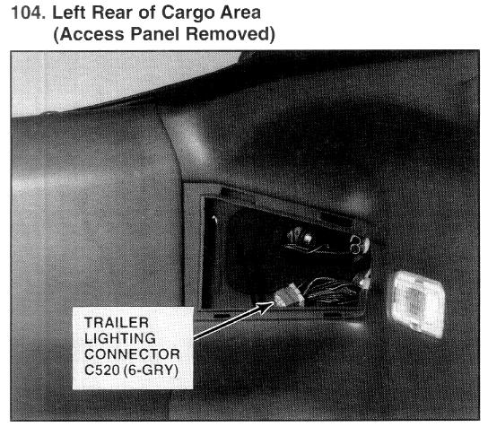

Operation CHARM
: Car repair manuals for everyone.
Home
>>
Acura
>>
1994
>>
Integra (RS, LS) L4-1834cc 1.8L DOHC FI
>>
Repair and Diagnosis
>>
Accessories and Optional Equipment
>>
Towing / Trailer System
>>
Trailer Connector
>>
Locations
>>
Photo 104
Photo 104

Left Rear Of Cargo Area (Access Panel Removed)